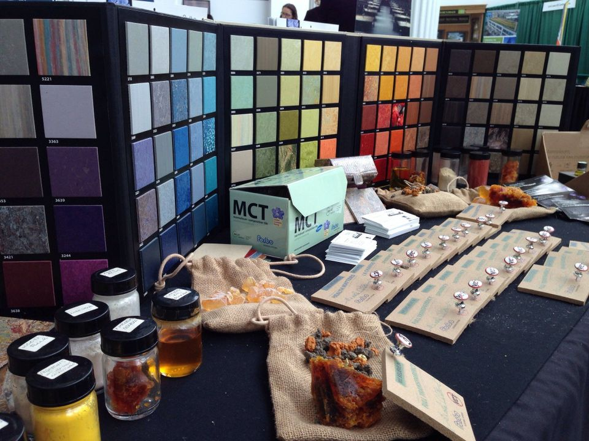

Everyone wants to give their family the best; whether that means the best food or the highest quality healthcare, every parent or guardian is looking to provide their children with the best of the best. When looking into products for families, it is important to consider all of the effects of the products used. Many of these products are sneaky, and may use harsh or even toxic chemicals to make their product in the cheapest way possible, completely disregarding the safety and health of consumers.
Some buyers have done their research and have opted out of dangerous products and have chosen to use eco-friendly products, which benefit both the Earth and their families. Not knowing what goes into a product that a family uses regularly can be worrisome for many families, especially those with children. Many are currently stressing only buying eco-friendly products, but what are these products, and why are they the better option?